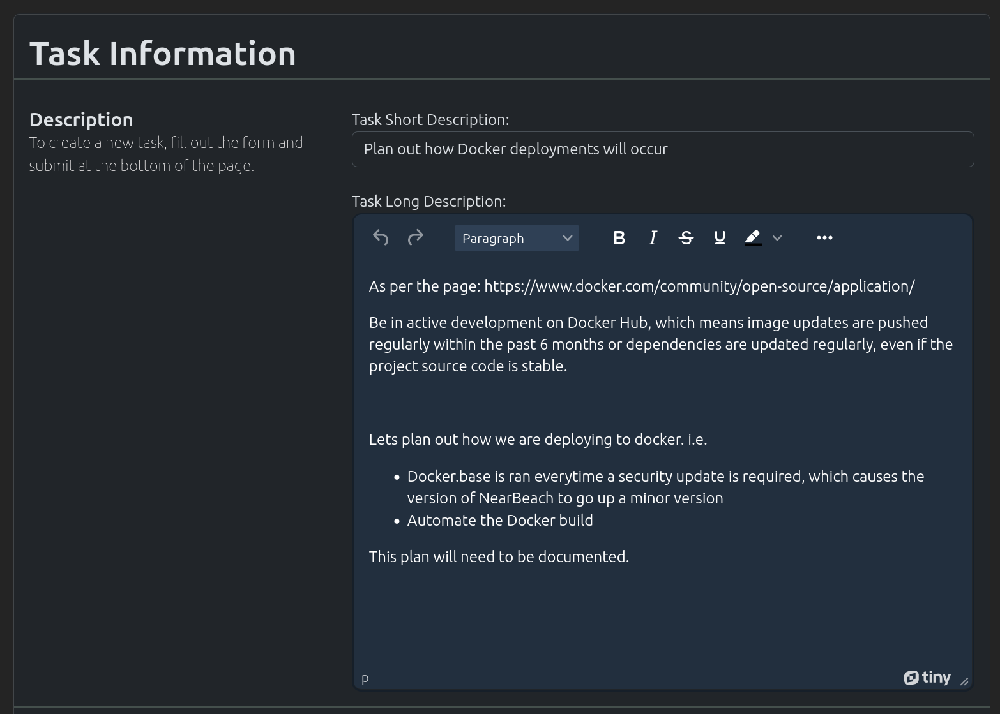
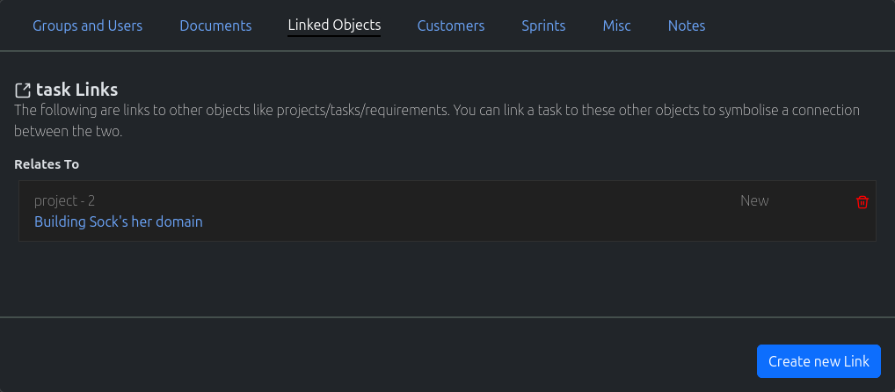

Task
{kind=link}
Create Task
In the navigation menu at the top of the page. Click on the option “New Object”
In the dropdown, click on the option “New Task”
The “New Task” page will load. Fill out the form appropriately and click on the “Create New Task”
Search Task
In the navigation menu at the top of the page. Click on the option “Find Objects”
In the dropdown, click on the option “List all Objects”
The “Search” page will load. Use the search field to search for your required task.
Note
Spaces are considered wildcards in this search.
Update Task
Use the method above to find the appropriate Task you wish to edit.
Edit the Task, and once completed click on the “Update Task” button
Misc Task Functionality
{kind=link}
The following are misc/common functionality;
Add Group To Task - More Information
Assign Customer To Task - More Information
Adding Links to current Object - More Information
Documentation - More Information
Adding Customers To Tasks - More Information
Creating New Sprints - More Information
Assigning Tags To Tasks - More Information
Creating Public Links for Tasks - More Information
Writing Notes for A Task - More Information